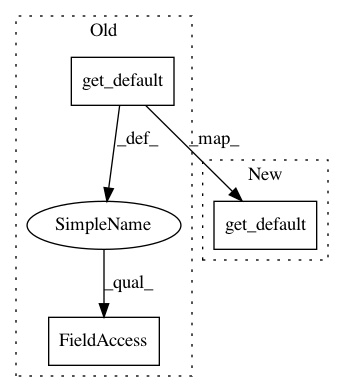

96f3f30a49b2b94dc8a10409788720b4c860a334,debug_toolbar/compat.py,,get_template_dirs,#,53
Before Change
def get_template_dirs():
Compatibility method to fetch the template directories.
if Engine:
template_dirs = Engine.get_default().dirs
else: // Django < 1.8
template_dirs = settings.TEMPLATE_DIRS
return template_dirs
After Change
Compatibility method to fetch the template directories.
if Engine:
try:
engine = Engine.get_default()
except ImproperlyConfigured:
template_dirs = []
else:
template_dirs = engine.dirs
In pattern: SUPERPATTERN
Frequency: 3
Non-data size: 3
Instances
Project Name: jazzband/django-debug-toolbar
Commit Name: 96f3f30a49b2b94dc8a10409788720b4c860a334
Time: 2015-03-08
Author: aymeric.augustin@m4x.org
File Name: debug_toolbar/compat.py
Class Name:
Method Name: get_template_dirs
Project Name: jazzband/django-debug-toolbar
Commit Name: 96f3f30a49b2b94dc8a10409788720b4c860a334
Time: 2015-03-08
Author: aymeric.augustin@m4x.org
File Name: debug_toolbar/compat.py
Class Name:
Method Name: get_template_loaders
Project Name: jazzband/django-debug-toolbar
Commit Name: 96f3f30a49b2b94dc8a10409788720b4c860a334
Time: 2015-03-08
Author: aymeric.augustin@m4x.org
File Name: debug_toolbar/compat.py
Class Name:
Method Name: get_template_context_processors